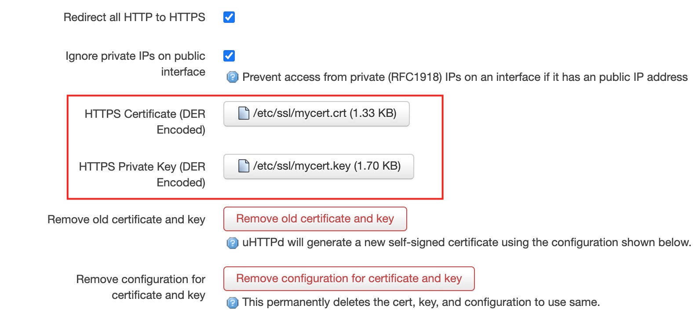

这篇文章上次修改于 200 天前，可能其部分内容已经发生变化，如有疑问可询问作者。
openwrt 提供了一个 luci 管理界面可以通过图形化的方式进行配置管理。我们通过 lan 网地址 http 访问 luci 界面，会有一个提示不安全的链接，一般浏览器提供了一个跳过选项可以忽略警告。
但是当我们通过 wan 口地址访问 luci 界面时，新版的 chrome 会强制拒绝访问 http 不安全的链接，这样我们就无法通过外网访问 luci 界面了。
注意如果想要从 wan 口访问 luci 界面，需要配置防火墙放行，具体参考：https://blog.niekun.net/archives/1818.html
解决方法是我们给 luci 配置一个 ssl 证书，这样浏览器就会放行了。
首先安装相关程序：
opkg update && opkg install openssl-util luci-app-uhttpd
以上我们安装了 openssl 套件和 uhttpd 的 ui 配置接口，可以图形化的方式配置 uhttpd。
下面我们来生成需要的 ssl 证书文件。
首先创建文件 etc/ssl/myconfig.conf：
[req]
distinguished_name = req_distinguished_name
x509_extensions = v3_req
prompt = no
string_mask = utf8only
[req_distinguished_name]
C = US
ST = VA
L = SomeCity
O = OpenWrt
OU = Home Router
CN = luci.openwrt
[v3_req]
keyUsage = nonRepudiation, digitalSignature, keyEncipherment
extendedKeyUsage = serverAuth
subjectAltName = @alt_names
[alt_names]
DNS.1 = luci.openwrt
IP.1 = 192.168.1.1可以修改 C (country), ST (state), L (location), O (organization), OU (organization unit) 为你想要的内容。
CN 和 DNS.1 必须是一样的地址，它们表示此证书代表的域名，和 IP 是对应的。如果配置了 luci 界面地址的 hosts，这里就可以定义为对应的域名。之后我们就可以通过访问这个域名来访问 IP。
IP.1 就是 luci web 地址，设置为对应的地址即可。
配置文件保存后返回 ssl 目录：
cd /etc/ssl
执行下面的命令：
openssl req -x509 -nodes -days 730 -newkey rsa:2048 -keyout mycert.key -out mycert.crt -config myconfig.conf
会自动在当前目录下创建 mycert.key 和 mycert.crt 文件。
然后我们先通过 lan 内网访问 luci web 界面，在顶部我们可以看到多了一个 services 菜单，点击其中的 uhttpd 进入配置界面，在 HTTPS Certificate 和 HTTPS Private Key 中分别上传 crt 和 key 文件：

然后点击 save and apply。
重启 uhttpd 服务：
/etc/init.d/uhttpd restart
此时我们通过 wan 口地址访问 luci web 界面，应该就可以正常进入了。
下面我们将刚才生成的 ssl 文件加入 backup 列表。默认情况下 /etc/config 下的文件会自动进行备份。
我们进入 System → Backup/Flash Firmware，点击 configuration 栏，然后将 /etc/ssl/mycert.crt 和
/etc/ssl/mycert.key 加入列表中，点击 save 即可。
之后我们生成的备份就会包含这些文件。
没有评论